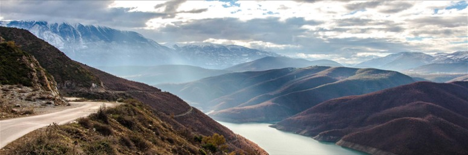
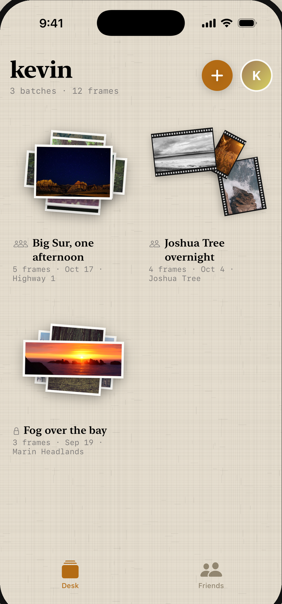
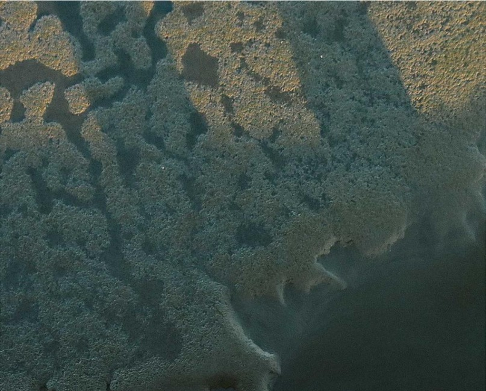
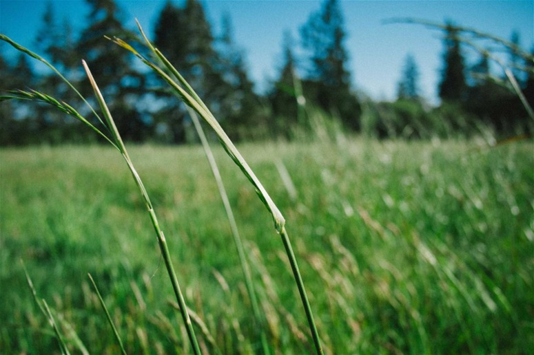
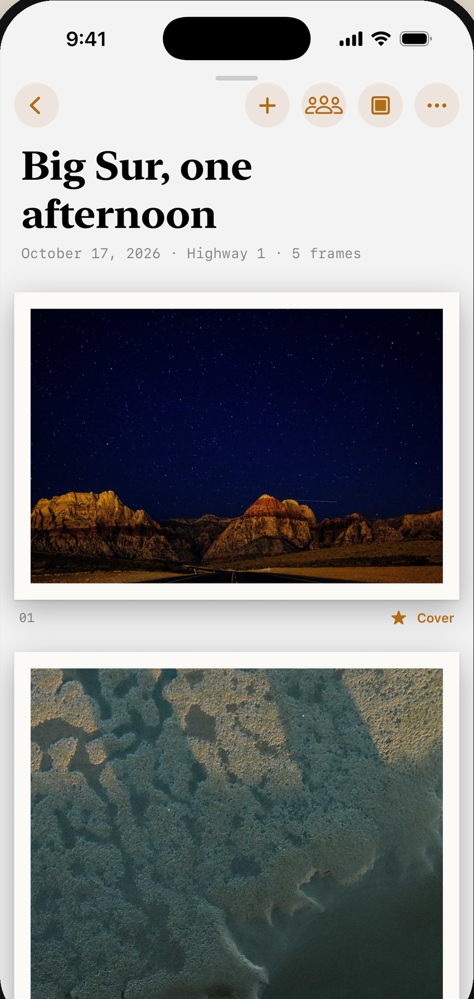
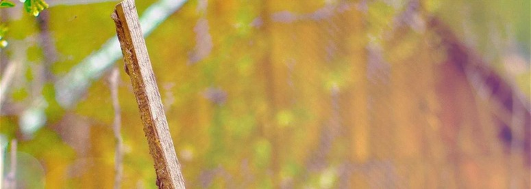
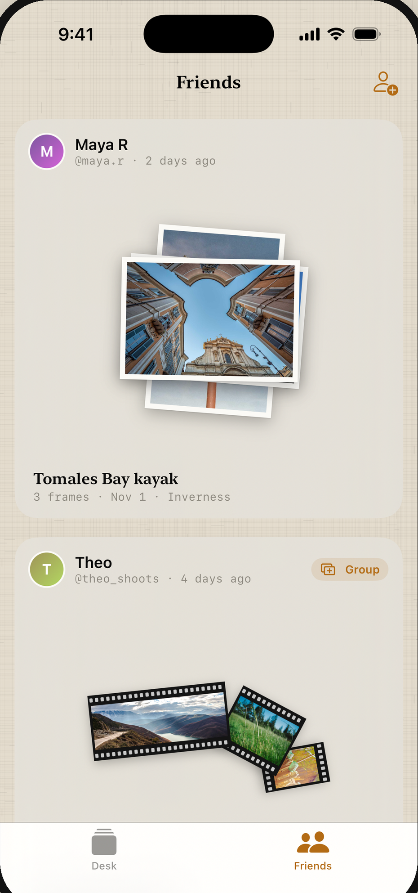

Joshua Tree overnight
2 people




The desk today is a quiet grid. It doesn't say that people reacted, who can see what, or which batch is newest.

Drove down after work and got an hour of light.
Five identical round icons sit across the top, and you have to long-press a photo to learn it has likes.

The viewer's bar gives Like, Comment, Edit, Make cover, Share and Remove the same weight, with Remove one slot from Share.

Each feed card is mostly empty linen around one small pile, so a screen shows about one batch and nothing about what's inside.
Same linen, paper, serif and amber. Changes are to hierarchy, reach and what each screen tells you.